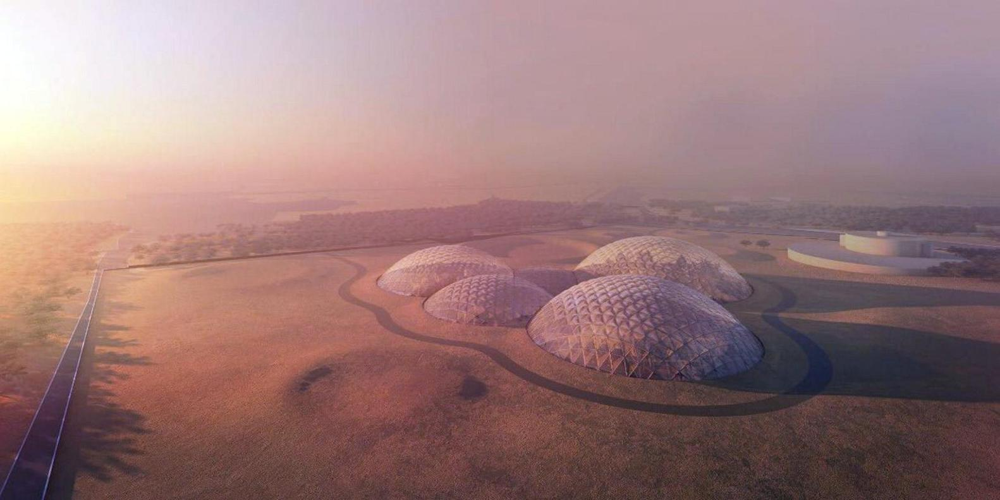
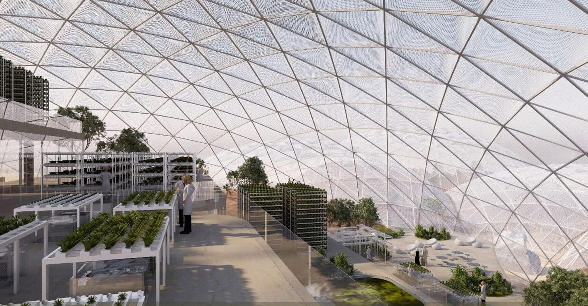

UAE Announces $140 Million BIG-Designed Mars Science City
The government of the United Arab Emirates has announced the launch of the Mars Science City project, a $140 Million USD (AED 500 million) research city that will serve as a “viable and realistic model” for the simulation of human occupation of the martian landscape. Designed by a team of Emirati scientists, engineers and designers from the Mohammed bin Rashid Space Centre in partnership with Bjarke Ingels Group (BIG), the 1.9 million-square-foot domed structure will become the largest space simulation city ever constructed. Mars Science City will house a variety of program pieces for both researchers and visitors, including laboratories for the study of food, energy and water; landscapes for agricultural testing and food security studies; and a museum celebrating humanity’s greatest space achievements and educating visitors on the city’s research. Utilizing one of the techniques currently considered for Mars habitat construction, the walls of the museum will be 3D printed using sand from the Emirati desert. Laboratory spaces will be outfitted with advanced technologies allowing researchers to test construction and living strategies under specific Martian heat and radiation levels. Plans for the city include an experimental living scenario in which a team will attempt to live within the constructed environment for a full year. "The UAE is a great country with vision and understanding of the challenges we face and the rapid changes our world is experiencing,” said Vice President, Prime Minister and Ruler of Dubai, His Highness Sheikh Mohammed bin Rashid Al Maktoum.
More about Big Ingels Group
Bjarke Bundgaard Ingels (Danish pronunciation: [ˈbjɑːgə ˈbɔngɒːˀ ˈeŋˀl̩s]; born 2 October 1974) is a Danish architect. He is the founder and creative partner of Bjarke Ingels Group (BIG) since 2005. He is known for buildings that defy traditional architectural conventions and dimensions, ranging from representations of mountains to snowflakes. His designs incorporate sustainable development ideas and sociological concepts, along with sloped lines that are shaped to their surroundings.[1] In Denmark, he became known for designing two housing complexes in Ørestad: VM Houses and Mountain Dwellings. In 2006 he started his own architecture firm, Bjarke Ingels Group, which grew to a staff of 400 by 2015. Some of their best known projects are the 8 House housing complex, the VIA (West 57) apartments in Manhattan, the Google North Bayshore headquarters (co-designed with Thomas Heatherwick), the Superkilen park, and the Amager Bakke waste-to-energy plant. Since 2009, Ingels has won numerous architectural competitions. In October 2011, the Wall Street Journal named him the Innovator of the Year for architecture.[citation needed] He moved to New York City in 2012, where in addition to the VIA apartments, BIG won a design contest for improving Manhattan's flood resistance after Hurricane Sandy, and are designing the new Two World Trade Center building. BIG is a Copenhagen based group of architects, designers, builders and thinkers operating within the fields of architecture, urbanism, research and development. The office is currently involved in a large number of projects throughout Scandinavia, Europe, Asia and the Middle East. BIG’s architecture emerges out of a careful analysis of how contemporary life constantly evolves and changes. Not least due to the influence from multicultural exchange, global economical flows and communication technologies that all together require new ways of architectural and urban organization. We believe hat in order to deal with today’s challenges, architecture can profitably move into a field that has been largely unexplored. A pragmatic utopian architecture that steers clear of the petrifying pragmatism of boring boxes and the naïve utopian ideas of digital formalism. In our projects we test the effects of size and the balance of programmatic mixtures on the triple bottom line of the social, economic and ecological outcome. Like a form of programmatic alchemy we create architecture by mixing conventional ingredients such as living, leisure, working, parking and shopping. By hitting the fertile overlap between pragmatic and utopia, we architects once again find the freedom to change the surface of our planet, to better fit contemporary life forms. In all our actions we try to move the focus from the small details to the BIG picture.

